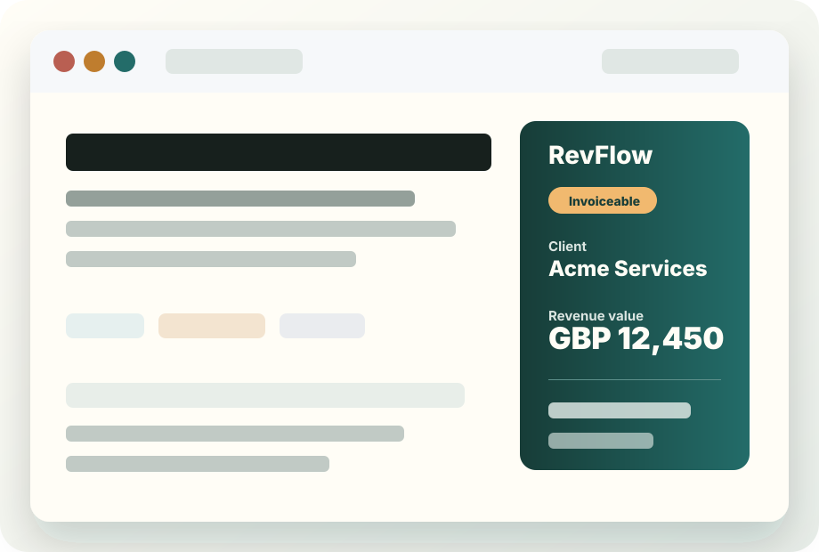
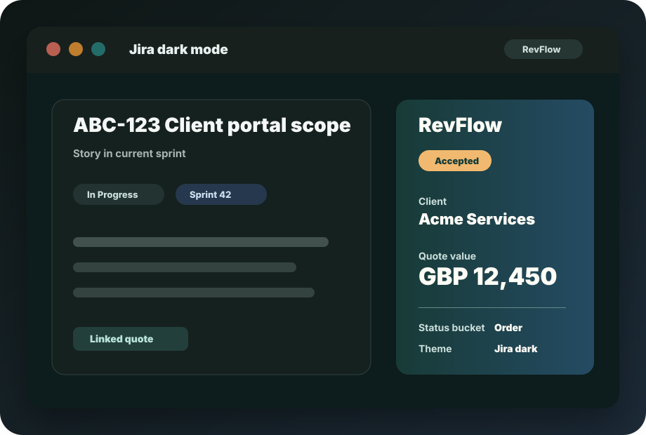

RevFlow for Jira
Quote-to-delivery revenue control for Jira Cloud. Quote the work, link it to the issues that deliver it, and report on WIP, invoiceable value, and missing quote coverage — all inside Jira.
View on the MarketplaceRevFlow by Quotaurus
RevFlow gives Jira Cloud teams one place to quote work, link it to the issues that deliver it, and see WIP, invoiceable value, and unquoted work as it happens. No spreadsheets. No separate CPQ. No revenue slipping through the cracks.

From Quotaurus
Quotaurus builds commercial-control software for teams that run their business in Jira. RevFlow is our first product — live today. More are on the way.
Quote-to-delivery revenue control for Jira Cloud. Quote the work, link it to the issues that deliver it, and report on WIP, invoiceable value, and missing quote coverage — all inside Jira.
View on the MarketplaceWe're building the next Quotaurus product for Atlassian teams. Want a say in what we build next, or early access when it lands?
Talk to usThe problem
Jira holds the work, but the commercial story is scattered across spreadsheets, PDFs, email threads, and finance exports. By the time numbers reconcile, the money's already been decided. RevFlow keeps quotes, issue links, statuses, forecast dates, PO numbers, line items, and reporting right next to the work that earns them — so nothing gets lost between delivery and the invoice.
How it works
Build and manage quotes straight from the RevFlow project page or the Jira issue panel, and keep the linked quote in view right beside the delivery scope.
A guided wizard maps Jira fields, statuses, issue types, currency, tax, quote items, clients, revenue streams, email, and access rules to how your team already works — no raw field IDs, no guesswork.
Map your quote statuses and work buckets — order, WIP, invoiceable, closed, lost — so every report mirrors the real Jira workflow instead of a finance team's best guess.
RevFlow flags current and next-sprint work with no quote attached, so you spot unbilled delivery while there's still time to do something about it.
Generate client-ready quote PDFs on demand. Turn on optional Mailgun or SendGrid sending and RevFlow records the recipient and sent date right on the quote.
Spin up monthly draft quotes from recurring templates for retainers, subscriptions, support packages, and any other work that repeats like clockwork.
Product tour
Admins are walked through field mappings, statuses, company details, currencies, quote items, clients, features, email, and access — no manual config files.
Linked quotes stay visible from the Jira issue that created or receives the work, so scope and price never drift apart.
Filter by status, system, created date, and free-text search from the project RevFlow page.
Quote funnel, value over time, top clients, top systems, revenue streams, and completion-month reporting — built in.
See current and next-sprint work with no linked quote, scoped to the issue types you care about.
RevFlow follows Atlassian theme support with dedicated dark-mode styling across forms, tables, status pills, reports, and wizard screens.
Product visuals

First-run setup maps RevFlow to your Jira fields, statuses, work buckets, currencies, features, email providers, and access permissions — before a single quote goes out.

Quote funnel, WIP, invoiceable value, completion month, top clients, top systems, revenue streams, and missing coverage — all in the Jira project view, no export required.

RevFlow follows Atlassian theme support with dark-mode styling for its panels, forms, tables, reports, status pills, and setup screens — so it feels native, not bolted on.
Who it's for
Quote new scope, change requests, and retained work straight from the Jira tickets your delivery team already runs.
Keep recurring drafts, one-off requests, systems, PO references, and forecast dates in one Jira workflow.
See accepted, WIP, invoiceable, closed, and missing-coverage signals without waiting on a finance spreadsheet.
Roll out a configurable Forge app with project-level setup, permission modes, and import/export — no separate CPQ platform.
Outputs
| Product | Rate | Qty | Total |
|---|---|---|---|
| Support package | GBP 750.00 | 1 | GBP 750.00 |
| Implementation work | GBP 95.00 | 8 | GBP 760.00 |
SubtotalGBP 1,510.00
VATGBP 302.00
TotalGBP 1,812.00
A quote that keeps working long after the PDF is sent.
PDF generation works with no email setup at all. Sending is optional and runs through your own Mailgun or SendGrid configuration.
Why RevFlow
| The workaround | Where it breaks | What RevFlow does instead |
|---|---|---|
| Spreadsheets | Quote value and delivery scope drift apart. | Quotes stay linked to Jira issues, statuses, projects, systems, and clients. |
| Generic CPQ | Too heavy for delivery teams that live in Jira. | Focused quote-to-delivery control, right inside Jira Cloud. |
| Manual PDFs | Versions, statuses, and sent records are impossible to track. | PDFs sit beside quote status, history, linked work, and reporting. |
| Finance-only reporting | Revenue gaps surface after the work is already done. | Missing-coverage and WIP reporting flag risk while it's still in Jira. |
| Separate quoting tools | Commercial context leaves the delivery workflow. | RevFlow runs from Jira project and issue views, configured to your setup. |
The cost of doing nothing
Say your team handles 40 quotes a month and burns 20 minutes on each one — chasing scope, checking status, rebuilding PDFs, reconciling finance exports. That's over 13 hours a month lost to admin, every month. RevFlow is built to give those hours back by keeping the whole commercial workflow inside Jira.
Buy with confidence
FAQ
Quotaurus. RevFlow for Jira is our first product, with more revenue tools for Atlassian teams on the way.
Yes — RevFlow is free for up to 10 users, with a 30-day trial on paid tiers. Billing runs through the Atlassian Marketplace.
Yes. RevFlow is a native Atlassian Forge app for Jira Cloud project and issue views.
Yes. Project admins run a first-run wizard and can relaunch it any time from settings.
Yes. It follows Jira theme support with dedicated dark-mode styling throughout.
Yes. Open quotes link to as many Jira issues as the work needs, and show from each issue panel.
Absolutely. PDF generation is fully independent of optional Mailgun or SendGrid sending.
Yes — configurable VAT settings plus GBP, USD, and EUR currency options.
Yes. RevFlow exports and imports setup as JSON for review and repeat rollout.
Get started
Install RevFlow free from the Atlassian Marketplace, follow the setup guide, or ask us anything before you roll out.